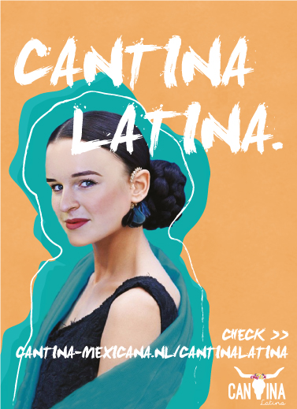
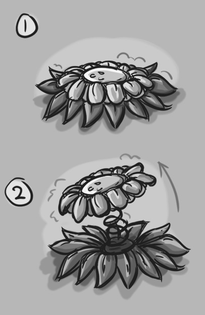
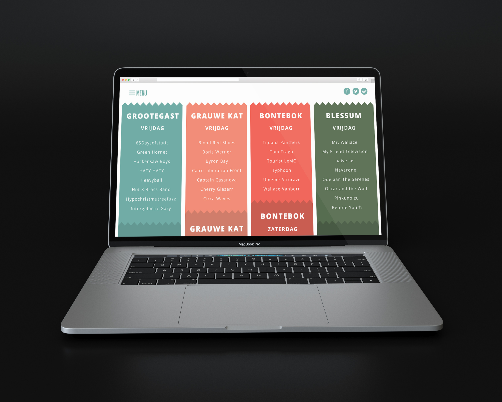
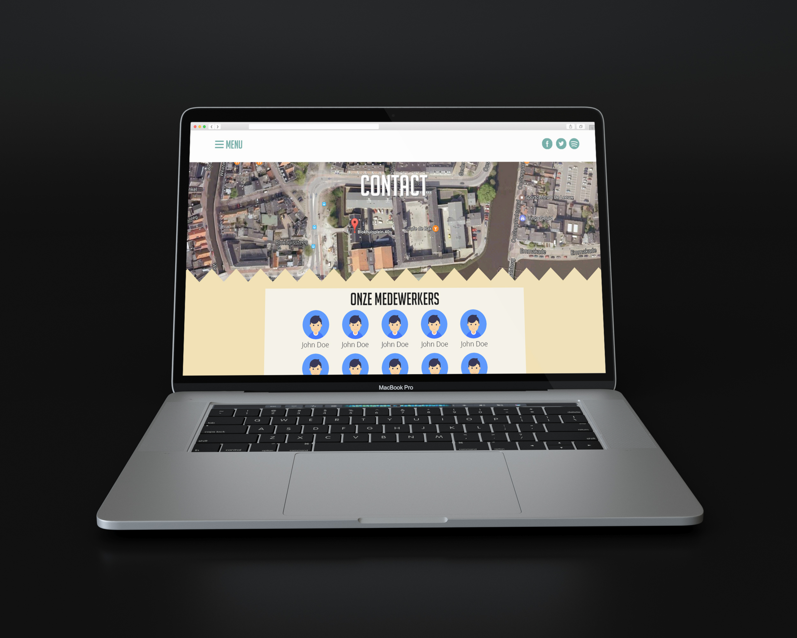
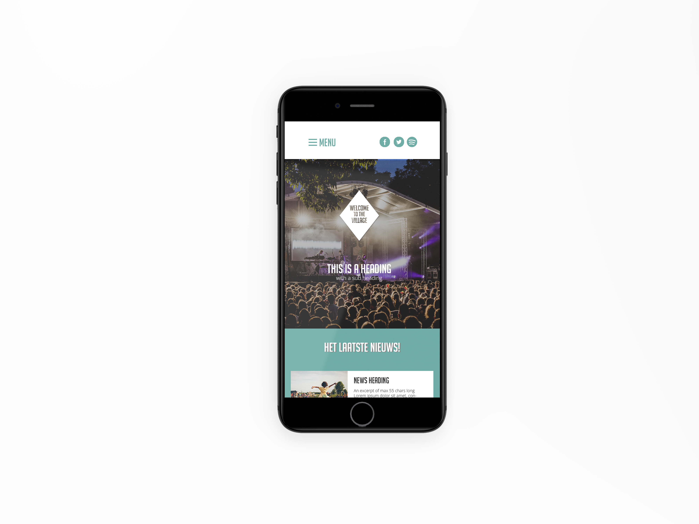
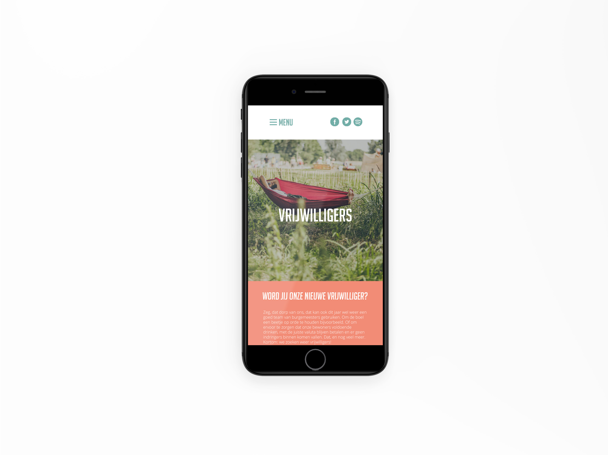

“In de major Visual Design richt je je op het bedenken en ontwerpen van interactieve producten en belevingen. Wat maakt communicatie effectief?”
In de major Visual Design richt je je op het bedenken en ontwerpen van interactieve producten en belevingen. Wat maakt communicatie effectief? Hoe kunnen we mensen motiveren om hun gedrag te veranderen?
Het bedenken en visualiseren van crossmediale design-, merk- en interactieve mediaconcepten is het terrein van een professional op het gebied van Visual Design. Het zijn de creatieve denkers die met prikkelende ideeën komen.
Voor de hbo-opleiding Communication & Multimedia Design gelden de volgende toelatingseisen:

Je bent toelaatbaar als je een van de volgende profielen hebt gevolgd: Natuur & Techniek, Natuur & gezondheid, Economie & Maatschappij, Cultuur & Maatschappij.

C&M opleiding heeft extra toelatingseisen. De rest van de havo-profielen zijn toelaatbaar zonder aanvullende diploma eisen.

Je bent toelaatbaar met een MBO niveau 4 diploma. Soms wel alleen uit bepaalde domeinen.
Ben je eerstejaarsstudent? Dan geldt dat je je lesrooster krijgt uitgedeeld tijdens de introductieweek in september. Ben je ouderejaarsstudent, dan kun je het vinden via je Digirooster lesrooster.
Hieronder vind je een link naar de boekenlijst van het schooljaar 2017-2018 voor het eerste jaar van de opleiding Communication & Multimedia Design
In het eerste jaar maak je kennis met alle richtingen (majors) van de opleiding en leg je een brede basis binnen het creatief technologische domein.
Design TheoryDesign Tools Design ResearchDesign ToolsDesign ThinkingBusiness Model Innovation
Na het eerste jaar specialiseer je je in een van de majors. Je volgt vakken en doet projecten die passen bij de richting die je gekozen hebt. Je werkt veel in projectgroepen en doet opdrachten voor echte opdrachtgevers. In het derde jaar ga je een half jaar op stage en daarnaast kun je bijvoorbeeld een minor volgen of studeren in het buitenland.
Je derde jaar start met een half jaar durende praktijkstage, waarbij je zelf kiest of je je stage in binnen- of buitenland wilt doen. Naast de dagelijkse werkzaamheden werk je aan een specifieke opdracht. Je kunt zelf een stageplaats zoeken, maar ook de opleiding heeft een groot aanbod van stageadressen waar je uit kunt kiezen.
Na je half jaar stage ga je aan de slag met je minor. Heb jij een brede interesse en wil je je graag ontwikkelen op een bepaald gebied? Dan kun je met ons breed aanbod aan minoren en keuzevakken zeker uit te voeten! Je kunt er bijvoorbeeld voor kiezen om onze major game on te volgen, of Da-Vinci of doel(groep)gerichte communicatie. Natuurlijk kun je je minor ook vullen met een pre-master of ervoor kiezen om een half jaar te gaan studeren in het buitenland. Er zijn volop mogelijkheden!
Centraal in het vierde jaar staat de afstudeeropdracht. Je gaat op zoek naar een creatieve oplossing voor een complex vraagstuk met behulp van interactieve media. Ook in het 4de jaar ga je een half jaar op stage. Tijdens deze stage doe je je afstudeeropdracht.
“Ik vind het geweldig als studenten beter worden dan ik!”
Docent Communication & Multimedia Design
Voorbeelden van functies waarin je aan de slag kan zijn: experience designer, multimedia designer, creatief concepter, visual designer, junior art director of junior brand- en design manager. Je bent in staat snel in te spelen op veranderingen binnen de creatieve industrie, het bedrijfsleven of bij de overheid. De beroepsmogelijkheden zullen de komende jaren alleen nog maar vergroten.
Video | Tweede jaar | Visual Design
Het interactieve filmpje is gemaakt voor het Centrum voor Revalidatie van het UMCG voor kinderen tussen de 3 en de 5 jaar. Niet alleen de kinderen zijn de doelgroep, maar hun ouders spelen ook een rol tijdens het revalidatieproces. Het filmpje kan ingesproken worden door de ouders, zodat de kinderen het filmpje op een vertrouwde manier kennis kunnen maken met het ziekenhuisbezoek.
Poster | Tweede jaar | Visual Design
In het tweede jaar werd een campagne ontworpen voor Cantina Mexicana. Cantina Mexicana, een Mexicaans restaurant aan de Vismarkt in Groningen, zag een terugloop in het aantal gasten. Het was aan de studenten om een crossmediale experience te bedenken en te visualiseren. Deze werd gepresenteerd aan de opdrachtgever.
Video | Tweede jaar | Game Design
In het spel Magical Maze moet de speler binnen de tijd de uitgang vinden van een doolhof. Het doolhof werkt de speler echter tegen door tijdens het spelen verschillende vallen te plaatsen.
Website | Eerste jaar | Interaction Design
   Video | Tweede jaar | Visual Design
Ben je enthousiast? Heb je vragen of advies nodig? Je kunt onze contactpersoon altijd bereiken.

T (050) 595 25 86
E j.van.denzen@pl.hanze.nl
of ben je al overtuigd?